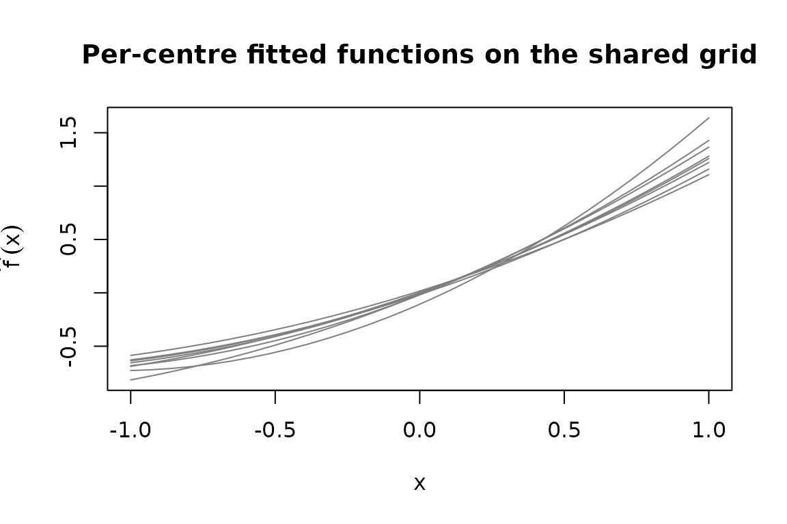

Why this step matters
Most users arrive at MetaHunt with one fitted model per
study (a random forest from each centre, a causal forest from
each trial site, a linear model from each cohort), not with the
m-by-G numeric matrix F_hat that
the rest of the package consumes. The two onramp helpers in MetaHunt —
build_grid() and f_hat_from_models() — bridge
that gap.
The conceptual picture is simple. Pick a finite set of “patient
profiles” (the grid); evaluate every centre’s model at
every profile; stack the resulting numeric vectors as rows. The output
is F_hat, where F_hat[i, g] is the prediction
of centre i’s model at grid point g.
This tutorial walks through that two-step flow and covers:
- the dispatch table
f_hat_from_models()uses, - a fully-worked dependency-free example with
lm, - the
predict_fnescape hatch for custom model classes, - a multi-dimensional grid,
- the sanity checks worth running before plugging the result into
metahunt().
build_grid()
build_grid() constructs a data frame of grid points from
any reference patient-level dataset. The reference data
should have the same columns and live on the same scale as the data each
centre’s model was trained on. Common choices, in rough order of
preference:
-
A held-out sample from the target population. Best
if you have one — even 50–500 rows is enough. The grid then is a draw
from the measure you care about and the default uniform
grid_weightsis exactly right. - A public dataset of the same population. For clinical work, e.g. NHANES, MEPS, or a national survey. For political-science replications, a public benchmark like the World Values Survey or ANES individual-level files works.
- A small individual-level sample from a single source site, if your privacy regime allows one site to share its covariates (but not outcomes). This is common in multi-site clinical trials where one site can provide a covariate sample under a covariate-only DUA.
- A synthetic grid based on summary statistics. If no individual-level data are available anywhere, construct a grid by sampling from marginal distributions whose moments you have agreed summary statistics for. This is the most permissive option but the least faithful — distances over the grid will reflect the independence assumption you imposed.
Whatever you pick, the grid must use the same column names
and encodings the per-site models were trained with —
f_hat_from_models() will call
predict(model, newdata = grid) and silently produce
nonsense if (say) factor levels disagree.
ref <- data.frame(age = rnorm(500, 60, 10),
bp = rnorm(500, 130, 15),
bmi = rnorm(500, 28, 4))
grid <- build_grid(ref, n_grid = 50, seed = 1)
dim(grid)
#> [1] 50 3
head(grid)
#> age bp bmi
#> 324 41.30211 131.21499 22.61675
#> 167 57.44973 109.91799 31.05163
#> 129 53.18340 125.20321 25.30332
#> 418 57.48835 140.33866 32.35510
#> 471 51.86756 136.83815 21.86313
#> 299 59.49434 91.05833 26.37670If n_grid is NULL (or at least
nrow(reference_data)), the full reference data is returned
unchanged. Otherwise n_grid rows are sampled uniformly
without replacement.
The empirical distribution of the returned grid implicitly defines
the measure mu used by the L^2(mu) inner
product downstream. If your grid is itself a representative sample of
the population you care about, the default uniform
grid_weights is appropriate. If the grid was sampled from
one population but you want distances to reflect another, pass
non-uniform grid_weights proportional to the target density
at each grid point. See vignette("grid-weights").
f_hat_from_models()
f_hat_from_models(models, grid) takes a list of fitted
model objects and the grid you just built, and returns the
m-by-G_grid numeric matrix
F_hat.
Dispatch table
Internally, f_hat_from_models() dispatches on each
model’s class:
| Class | Call form |
|---|---|
ranger |
predict(model, data = grid)$predictions |
grf::causal_forest, regression_forest
|
predict(model, newdata = grid)$predictions |
| anything else | as.numeric(predict(model, newdata = grid)) |
The default branch covers lm, glm,
randomForest, and most other R model objects whose
predict() method returns a numeric vector when called with
newdata.
ranger example (not run)
library(ranger)
centre_models <- lapply(centre_data_list,
function(d) ranger(y ~ ., data = d))
F_hat <- f_hat_from_models(centre_models, grid)
grf::causal_forest example (not run)
library(grf)
centre_models <- lapply(centre_data_list,
function(d) causal_forest(d$X, d$Y, d$W))
F_hat <- f_hat_from_models(centre_models, grid)These chunks are eval = FALSE so this vignette does not
depend on ranger or grf — installing either is
unnecessary just to read the tutorial.
Worked lm example
To keep the tutorial fully reproducible without external
dependencies, here is a complete onramp using lm() as the
per-centre model. (This is the same lm-onramp flow that
previously appeared in the introductory vignette, broken out and
annotated.)
m <- 8
centre_meta <- data.frame(
region = factor(sample(c("N", "S", "E", "W"), m, replace = TRUE)),
mean_age = round(runif(m, 50, 70)),
pct_female = round(runif(m, 0.4, 0.6), 2)
)
# Each centre fits a quadratic on a single covariate `x`.
make_centre_data <- function(i) {
x <- runif(80, -1, 1)
beta <- centre_meta$mean_age[i] / 60 # toy effect of metadata
data.frame(x = x, y = beta * x + 0.3 * x^2 + rnorm(80, sd = 0.2))
}
centre_models <- lapply(seq_len(m), function(i)
stats::lm(y ~ poly(x, 2), data = make_centre_data(i)))
# A 1-D grid in the centres' covariate space.
grid_centres <- data.frame(x = seq(-1, 1, length.out = 30))
F_hat_centres <- f_hat_from_models(centre_models, grid_centres)
dim(F_hat_centres) # 8 x 30
#> [1] 8 30
F_hat_centres[1:3, 1:5]
#> [,1] [,2] [,3] [,4] [,5]
#> [1,] -0.6884554 -0.6575489 -0.6241455 -0.5882450 -0.5498475
#> [2,] -0.6822055 -0.6615548 -0.6371818 -0.6090865 -0.5772689
#> [3,] -0.6552212 -0.6306971 -0.6031561 -0.5725983 -0.5390236You now have F_hat_centres (m × G_grid) and
centre_meta (m × p), which are everything
metahunt() needs.
predict_fn for custom S4 / bespoke classes
If your fitted models are S4 objects, ensembles, or otherwise need
custom handling, override the dispatcher with predict_fn.
The function must accept (model, grid) and return a
length-nrow(grid) numeric vector:
# Toy "model" that is just a list with a slope. predict_fn evaluates it.
fake_models <- lapply(seq_len(4), function(i)
list(slope = i / 4, intercept = 0))
custom_predict <- function(model, grid) {
model$intercept + model$slope * grid$x
}
F_hat_custom <- f_hat_from_models(fake_models, grid_centres,
predict_fn = custom_predict)
dim(F_hat_custom) # 4 x 30
#> [1] 4 30This same pattern extends to S4 model objects: write a one-line adapter that pulls predictions out and coerces to a numeric vector.
Multi-dimensional grids (3 covariates)
The grid does not need to be one-dimensional. With more than one
patient-level covariate, sample the grid from a multivariate reference
dataset and let predict() evaluate at each row.
# A 3-covariate reference dataset and a sub-sampled grid.
ref3 <- data.frame(age = rnorm(400, 60, 10),
bp = rnorm(400, 130, 15),
bmi = rnorm(400, 28, 4))
grid3 <- build_grid(ref3, n_grid = 25, seed = 1)
dim(grid3)
#> [1] 25 3
# Each centre fits an lm on (age, bp, bmi); slopes vary across centres
# so there is genuine cross-centre heterogeneity to recover.
set.seed(2)
m3 <- 8
centre_data3 <- lapply(seq_len(m3), function(i) {
n_i <- 60
age <- rnorm(n_i, 60, 10)
bp <- rnorm(n_i, 130, 15)
bmi <- rnorm(n_i, 28, 4)
# slopes vary across centres
beta_age <- 0.02 + 0.03 * (i / m3)
beta_bp <- -0.01 + 0.02 * cos(pi * i / m3)
beta_bmi <- 0.05 - 0.04 * (i / m3)
y <- beta_age * age + beta_bp * bp + beta_bmi * bmi + rnorm(n_i, sd = 0.3)
data.frame(age = age, bp = bp, bmi = bmi, y = y)
})
centre_models3 <- lapply(centre_data3, function(d) stats::lm(y ~ age + bp + bmi, data = d))
F_hat3 <- f_hat_from_models(centre_models3, grid3)
dim(F_hat3) # 8 x 25
#> [1] 8 25The number of grid points G_grid is yours to choose.
Larger grids give finer-resolution function estimates; smaller grids run
faster. A few dozen to a few hundred is typical.
Sanity checks
After building F_hat, run these quick checks before
passing it into the rest of the pipeline:
# Right shape: m studies x G grid points.
dim(F_hat3)
#> [1] 8 25
# Numeric, no NA.
is.numeric(F_hat3)
#> [1] TRUE
anyNA(F_hat3)
#> [1] FALSE
# Rows look like functions of similar magnitude (large outliers can
# dominate d-fSPA's `Delta`).
summary(apply(F_hat3, 1, function(r) c(min = min(r), max = max(r))))
#> V1 V2 V3 V4
#> Min. :3.081 Min. :2.642 Min. :1.807 Min. :0.6285
#> 1st Qu.:3.429 1st Qu.:2.992 1st Qu.:2.209 1st Qu.:1.2012
#> Median :3.777 Median :3.341 Median :2.612 Median :1.7738
#> Mean :3.777 Mean :3.341 Mean :2.612 Mean :1.7738
#> 3rd Qu.:4.125 3rd Qu.:3.690 3rd Qu.:3.015 3rd Qu.:2.3464
#> Max. :4.473 Max. :4.039 Max. :3.418 Max. :2.9190
#> V5 V6 V7 V8
#> Min. :-0.3436 Min. :-1.1371 Min. :-1.8484 Min. :-1.9006
#> 1st Qu.: 0.2655 1st Qu.:-0.4827 1st Qu.:-1.1030 1st Qu.:-1.1305
#> Median : 0.8745 Median : 0.1718 Median :-0.3576 Median :-0.3605
#> Mean : 0.8745 Mean : 0.1718 Mean :-0.3576 Mean :-0.3605
#> 3rd Qu.: 1.4836 3rd Qu.: 0.8262 3rd Qu.: 0.3877 3rd Qu.: 0.4095
#> Max. : 2.0926 Max. : 1.4806 Max. : 1.1331 Max. : 1.1796A quick visual check on a 1-D grid is also worth the cost:
matplot(grid_centres$x, t(F_hat_centres), type = "l", lty = 1,
col = "grey50",
xlab = "x", ylab = expression(hat(f)(x)),
main = "Per-centre fitted functions on the shared grid")
If a single centre’s curve is wildly far from the rest, that often
flags a bug (mis-scaled covariate, an lm with the wrong
response) rather than a real low-rank-violating outlier.
Common pitfalls
-
Different columns across centres. Every centre’s
model must accept rows of the same
griddata frame. If centre A was fit on(age, bp)and centre B was fit on(age, bmi), you cannot share a grid; harmonise the covariates first. -
Categorical levels. Factor levels in
gridmust match those the model saw at training. Pre-build levels explicitly withfactor(x, levels = ...)if needed. -
Wrong return shape from
predict_fn. Must be a length-G_gridnumeric vector.f_hat_from_models()errors if the length is wrong or any value isNA. -
Using a non-representative grid. The grid
implicitly defines the measure
mu. A grid concentrated in one corner of covariate space will under-weight other regions. Either resample the grid more evenly, or use non-uniformgrid_weights(seevignette("grid-weights")). -
Confusing
m × pstudy covariatesWwith the patient grid.Wlives at the study level (one row per centre, columns like region or year). The grid lives at the patient level (one row per profile, columns like age and BMI). They are different objects.